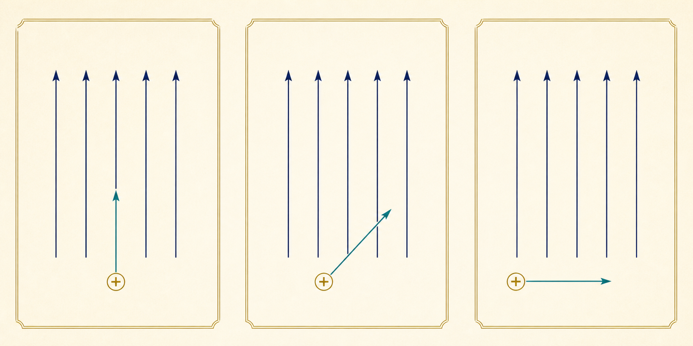

Sistemas Multi Física - Profesor Javier Pereyra
Fuerza magnética en forma escalar
Cómo reconocer el ángulo, elegir el caso correcto y resolver problemas con \(F_m=|q|Bv\,\sen(\alpha)\).
1 Idea inicial: no alcanza con moverse
Una carga puede atravesar un campo magnético sin desviarse o experimentar una fuerza máxima. La diferencia no depende solo de la carga, la rapidez y el campo: también importa cómo está orientada la velocidad respecto del campo.
2 Fórmula del módulo
\(F_m\) es el módulo de la fuerza magnética y \(\alpha\) es el ángulo entre \(\vec v\) y \(\vec B\), de \(0^\circ\) a \(180^\circ\).
Como calculamos un módulo, usamos \(|q|\): el resultado nunca puede ser negativo.
| Magnitud | Símbolo | Unidad SI |
|---|---|---|
| Fuerza magnética | \(F_m\) | newton (N) |
| Módulo de la carga | \(|q|\) | coulomb (C) |
| Campo magnético | \(B\) | tesla (T) |
| Rapidez | \(v\) | metro por segundo (m/s) |
| Ángulo entre \(\vec v\) y \(\vec B\) | \(\alpha\) | grado (°) |
3 El ángulo decide el caso

\(\sen 0^\circ=0\).\(F_m=0\)
\(\sen 90^\circ=1\).\(F_{m,\max}=|q|Bv\)
Solo interviene \(v_\perp=v\sen\alpha\).\(0<F_m<F_{m,\max}\)
\(\sen 180^\circ=0\).\(F_m=0\)
| \(\alpha\) | \(\sen\alpha\) | Fracción de \(F_{m,\max}\) |
|---|---|---|
| \(0^\circ\) o \(180^\circ\) | 0 | 0 % |
| \(30^\circ\) o \(150^\circ\) | 0,50 | 50 % |
| \(45^\circ\) o \(135^\circ\) | 0,707 | 70,7 % |
| \(60^\circ\) o \(120^\circ\) | 0,866 | 86,6 % |
| \(90^\circ\) | 1 | 100 % |
4 Unidades y conversiones
\(1\,\mu\mathrm C=10^{-6}\,\mathrm C\)
\(1\,\mathrm{nC}=10^{-9}\,\mathrm C\)
\(1\,\mathrm{mT}=10^{-3}\,\mathrm T\)
\(1\,\mathrm{km/s}=10^3\,\mathrm{m/s}\)
5 Despejes posibles
6 Método de resolución
Identificá \(F_m\), \(|q|\), \(B\), \(v\) y \(\alpha\).
Convertí \(\mu\mathrm C\), nC, mT o km/s.
Reconocé si el caso es paralelo, oblicuo o perpendicular.
Reemplazá, escribí la unidad y explicá si el valor tiene sentido.
7 Ejemplos resueltos: cuatro casos
Caso A: fuerza máxima
Problema: una carga de \(2{,}0\,\mu\mathrm C\) se mueve a \(4{,}0\times10^5\,\mathrm{m/s}\), perpendicularmente a un campo de \(0{,}30\,\mathrm T\).
Datos en SI: \(|q|=2{,}0\times10^{-6}\,\mathrm C\), \(v=4{,}0\times10^5\,\mathrm{m/s}\), \(B=0{,}30\,\mathrm T\), \(\alpha=90^\circ\).
Reemplazo: \(F_m=(2{,}0\times10^{-6})(0{,}30)(4{,}0\times10^5)(1)\).
Resultado: \(\boxed{F_m=0{,}24\,\mathrm N}\).
Interpretación: es el máximo valor posible con esos datos.
Caso B: movimiento oblicuo
Problema: una carga de \(1{,}5\,\mu\mathrm C\) viaja a \(2{,}0\times10^5\,\mathrm{m/s}\) formando \(30^\circ\) con un campo de \(0{,}40\,\mathrm T\).
Reemplazo: \(F_m=(1{,}5\times10^{-6})(0{,}40)(2{,}0\times10^5)\sen30^\circ\).
Resultado: \(\boxed{F_m=0{,}060\,\mathrm N}\).
Interpretación: como \(\sen30^\circ=0{,}5\), la fuerza vale la mitad del máximo.
Caso C: fuerza nula
Problema: una carga se mueve en sentido opuesto al campo, por lo que \(\alpha=180^\circ\).
Cálculo: \(F_m=|q|Bv\sen180^\circ=|q|Bv(0)\).
Resultado: \(\boxed{F_m=0\,\mathrm N}\).
Interpretación: que la carga se mueva no garantiza fuerza magnética; su velocidad debe tener componente perpendicular al campo.
Caso D: hallar una incógnita
Problema: una carga de \(3{,}0\,\mu\mathrm C\) experimenta \(0{,}018\,\mathrm N\) al moverse perpendicularmente en un campo de \(0{,}40\,\mathrm T\). Hallar \(v\).
Despeje: \(v=F_m/(|q|B\sen\alpha)\).
Reemplazo: \(v=0{,}018/[(3{,}0\times10^{-6})(0{,}40)(1)]\).
Resultado: \(\boxed{v=1{,}5\times10^4\,\mathrm{m/s}}\).
8 Errores frecuentes y preguntas para pensar
| Error | Cómo corregirlo |
|---|---|
| Usar \(q<0\) y obtener un módulo negativo. | En la forma escalar se reemplaza \(|q|\). |
| Tomar el ángulo respecto de una hoja o un eje. | \(\alpha\) siempre es el ángulo entre \(\vec v\) y \(\vec B\). |
| Omitir \(\sen\alpha\). | Solo vale 1 cuando \(\alpha=90^\circ\). |
| Reemplazar \(\mu\mathrm C\) sin convertir. | Escribir primero la carga en coulomb. |
¿Por qué duplicar \(v\) duplica la fuerza, pero duplicar el ángulo no necesariamente lo hace? ¿Por qué una fuerza magnética puede cambiar la dirección del movimiento sin aumentar la rapidez? ¿Qué información falta en la fórmula escalar para conocer hacia dónde apunta \(\vec F_m\)?
9 Actividades: 15 ejercicios
Resolvé mostrando datos, conversión al SI, fórmula o despeje, reemplazo, resultado con unidad e interpretación.
- Una carga de \(2{,}0\,\mu\mathrm C\) se mueve a \(4{,}0\times10^5\,\mathrm{m/s}\), perpendicularmente a un campo de \(0{,}30\,\mathrm T\). Calculá \(F_m\).
- Una carga de \(5{,}0\,\mu\mathrm C\) se mueve paralelamente a un campo de \(0{,}20\,\mathrm T\), con rapidez \(3{,}0\times10^4\,\mathrm{m/s}\). Calculá \(F_m\) y justificá sin hacer primero la multiplicación completa.
- Una carga de \(1{,}5\,\mu\mathrm C\) se desplaza a \(2{,}0\times10^5\,\mathrm{m/s}\), formando \(30^\circ\) con un campo de \(0{,}40\,\mathrm T\). Calculá \(F_m\).
- Una carga de \(8{,}0\,\mu\mathrm C\) se mueve a \(12\,\mathrm{km/s}\), formando \(60^\circ\) con un campo de \(0{,}25\,\mathrm T\). Convertí la rapidez y calculá \(F_m\).
- Un electrón viaja perpendicularmente a un campo de \(0{,}15\,\mathrm T\) con rapidez \(2{,}0\times10^6\,\mathrm{m/s}\). Usá \(|q_e|=1{,}602\times10^{-19}\,\mathrm C\) y calculá el módulo.
- Un protón se desplaza a \(3{,}0\times10^6\,\mathrm{m/s}\), formando \(45^\circ\) con un campo de \(0{,}50\,\mathrm T\). Usá \(|q_p|=1{,}602\times10^{-19}\,\mathrm C\).
- Una carga de \(3{,}0\,\mu\mathrm C\) experimenta \(0{,}018\,\mathrm N\) al moverse perpendicularmente a un campo de \(0{,}40\,\mathrm T\). Hallá su rapidez.
- Una carga de \(2{,}0\,\mu\mathrm C\), con rapidez \(2{,}0\times10^4\,\mathrm{m/s}\), forma \(30^\circ\) con el campo y experimenta \(0{,}012\,\mathrm N\). Hallá \(B\).
- Una partícula se mueve perpendicularmente a \(0{,}50\,\mathrm T\), con rapidez \(3{,}0\times10^4\,\mathrm{m/s}\), y recibe \(0{,}090\,\mathrm N\). Hallá \(|q|\) en \(\mu\mathrm C\).
- Una carga de \(4{,}0\,\mu\mathrm C\) se mueve a \(4{,}0\times10^4\,\mathrm{m/s}\) en \(0{,}50\,\mathrm T\). Si \(F_m=0{,}040\,\mathrm N\), hallá todos los ángulos posibles entre \(0^\circ\) y \(180^\circ\).
- Sobre una partícula actúa \(0{,}12\,\mathrm N\) cuando \(\alpha=90^\circ\). ¿Qué fuerza experimentaría, sin cambiar \(|q|\), \(B\) ni \(v\), si \(\alpha=30^\circ\)? Resolvé por proporcionalidad.
- Una carga \(q=-2{,}0\,\mu\mathrm C\) se mueve perpendicularmente a \(0{,}30\,\mathrm T\), con rapidez \(5{,}0\times10^4\,\mathrm{m/s}\). Calculá el módulo y explicá el efecto del signo negativo.
- Una partícula se mueve en sentido opuesto al campo: \(\alpha=180^\circ\). Si \(|q|=7{,}0\,\mu\mathrm C\), \(B=0{,}80\,\mathrm T\) y \(v=1{,}0\times10^5\,\mathrm{m/s}\), hallá \(F_m\) y justificá.
- Para \(|q|=1{,}0\,\mu\mathrm C\), \(B=0{,}20\,\mathrm T\) y \(v=1{,}0\times10^5\,\mathrm{m/s}\), completá una tabla de \(F_m\) para \(0^\circ\), \(30^\circ\), \(45^\circ\), \(60^\circ\) y \(90^\circ\). Graficá \(\alpha\) en el eje horizontal y \(F_m\) en el vertical; señalá ceros y máximo.
- Una carga de \(5{,}0\,\mathrm{nC}\) tiene \(v_{\parallel}=3{,}0\times10^5\,\mathrm{m/s}\) y \(v_{\perp}=4{,}0\times10^5\,\mathrm{m/s}\) en \(1{,}2\,\mathrm T\). Calculá la rapidez total y \(F_m\). Explicá por qué para la fuerza alcanza con \(v_{\perp}\).
Resultados para autocorrección
- \(0{,}24\,\mathrm N\).
- \(0\,\mathrm N\).
- \(0{,}060\,\mathrm N\).
- \(2{,}08\times10^{-2}\,\mathrm N\).
- \(4{,}81\times10^{-14}\,\mathrm N\).
- \(1{,}70\times10^{-13}\,\mathrm N\).
- \(1{,}5\times10^4\,\mathrm{m/s}\).
- \(0{,}60\,\mathrm T\).
- \(6{,}0\,\mu\mathrm C\).
- \(30^\circ\) o \(150^\circ\).
- \(0{,}060\,\mathrm N\).
- \(0{,}030\,\mathrm N\); el signo cambia el sentido, no el módulo.
- \(0\,\mathrm N\).
- \(0\), \(0{,}010\), \(0{,}0141\), \(0{,}0173\) y \(0{,}020\,\mathrm N\).
- \(v=5{,}0\times10^5\,\mathrm{m/s}\); \(F_m=2{,}4\times10^{-3}\,\mathrm N\).